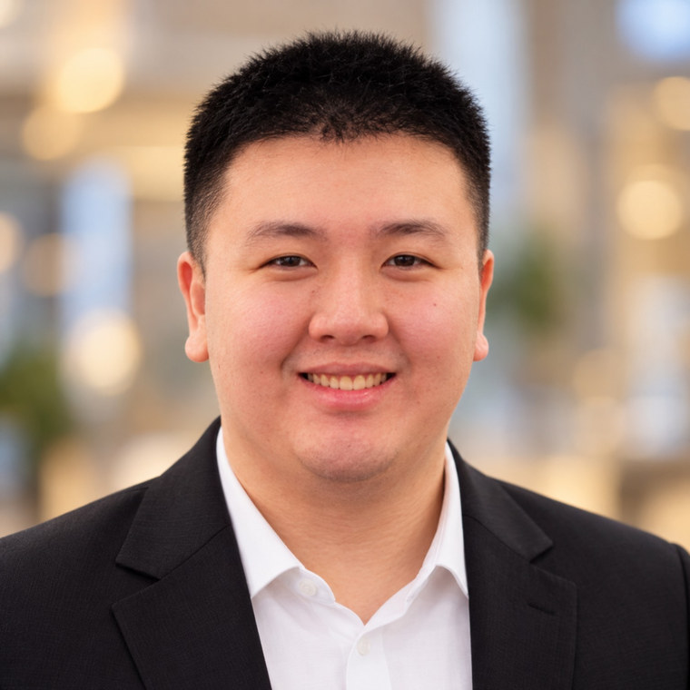

01 / ENGINEERING
Software & enterprise integration
Backend services and interfaces linking ERP, MES, customer systems, machine data, and production workflows.
R&D Manager and hands-on systems integrator combining software engineering, industrial automation, and engineering leadership to deliver production-ready solutions.

I work at the intersection of software, production equipment, and people—where successful systems have to operate beyond a demo environment.
Backend services and interfaces linking ERP, MES, customer systems, machine data, and production workflows.
Integrating PLCs, robots, sensors, and industrial applications, from architecture through commissioning and production support.
Leading multidisciplinary execution, translating complex customer requirements, and supporting long-term delivery and trust.
Three examples of how I approach complex manufacturing systems, from enterprise data to automation and equipment connectivity. Descriptions exclude proprietary implementation details.
Building reliable interfaces between enterprise processes and manufacturing execution is core to my industrial software background.
Integrated SAP with MES using C#, SQL and .NET APIs to connect business and shop-floor systems.
Connects enterprise data with manufacturing execution and reduces disconnection between systems.
Cross-functional delivery combining robotic equipment, control logic, sensors and manufacturing-system interfaces.
Led coordination and integration across software, robotics, PLC interfaces and commissioning.
One automated production line reduced direct operating manpower from 16 to 4 while supporting production targets.
Translating device-level messages into manufacturing-system interactions is where software engineering meets the production line.
Integrated customer machines using serial COM readers and C# processing to exchange data with MES/SFIS.
Supports consistent shop-floor data collection and manufacturing traceability across external equipment.
Additional implemented work, experimental prototypes and ongoing personal projects—clearly marked by stage.
Built basic parking-occupancy detection flow using Python, YOLO, and Hikvision CCTV camera feeds.
Converted Hikvision helper functionality from C# to Python to simplify development in Python environments.
LM35 sensor data captured with Raspberry Pi/Python, stored in PostgreSQL and displayed with PHP.
COVID-era two-part entry workflow using Raspberry Pi, Python and GraphQL to capture and validate health status at gates.
JavaScript automation to distribute meeting minutes and updates to phones through Telegram.
Machine dashboards, equipment alerts, and reporting to improve visibility of downtime and equipment status.
Event recording, replay and root-cause analysis project with .NET 10 and React/TypeScript; additional integrations planned.
Self-initiated application work exploring inventory visibility, part tracking and operational control.
Wiring/electrical documentation and component/material selection recommendations for engineering work.
I also manage the conditions that make sustained delivery possible: building capable teams, earning executive confidence, supporting contract continuity, and turning client trust into repeat projects.
My work includes demanding projects with Japanese and Chinese customers, cross-functional delivery, and operational decisions with commercial implications.
Helped turn an underestimated engineering function into a team whose capability attracted founder and C-level consideration for further investment.
Introduced a two-shift arrangement to increase production output and support stronger P&L performance.
Delivered high-quality technical projects for Japanese and Chinese clients, supporting repeat engagements and company revenue.
Handled client contract discussions during financially challenging periods, helping sustain project activity and department stability.
Built on hands-on software work and advanced through architecture, integrated manufacturing systems, and leading multidisciplinary R&D programs.
Universitas Internasional Batam · 2018
LanguagesIndonesian (native) · English (TOEIC 880, professional working proficiency)
MobilityBatam, Indonesia · Open to roles in Germany and across the EU · Work authorization required
Lead multidisciplinary engineering delivery, department improvement, technical customer engagement, and integration of automation and software into factory operations.
Designed industrial applications and integrated embedded devices, data services, inspection systems, and production workflows.
Developed MES software, machine interfaces, monitoring dashboards, traceability integration, and IoT-enabled tooling.
Built factory software, environmental monitoring, ESD controls, sensor integration and operational applications.
Selected technologies and engineering domains from production work and personal projects, not an exhaustive keyword inventory.
C# · .NET · ASP.NET Core · Python · JavaScript · TypeScript · PHP · REST · GraphQL
SQL Server · PostgreSQL · Git · GitHub · Bitbucket · Postman · VS Code · Visual Studio
MES · SFIS · SAP integration · PLCs · Modbus RTU · Serial COM · SCARA · cobots
YOLO · OpenCV · Hikvision CCTV · Arduino · Raspberry Pi · Sensors · Machine monitoring
Open to senior engineering, MES / systems integration, industrial software, customer-facing technical leadership, and R&D management opportunities in Germany and the EU.